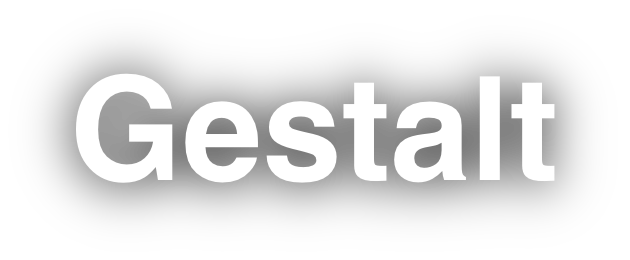
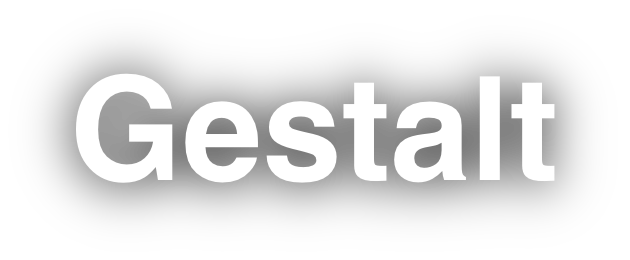

Gestalt er en samling af teorier om visuel perception. Disse principper forklarer, hvordan mennesker naturligt opfatter visuelle elementer som organiserede mønstre og helheder snarere end som mange separate dele. Gestalt er det tyske ord for "form" eller "helhed", og Gestalt-principperne beskriver, hvordan vores hjerne grupperer individuelle objekter til mønstre eller helheder inden for komplekse visuelle arrangementer. Nedenunder her kan du læse kort om de mest fremtrædende Gestalt-principper.
Billederne på denne side er fra levendestreg.dk "https://levendestreg.dk/gestalt-principper/"
Dette princip siger, at elementer, som er tæt placeret på hinanden, vil blive opfattet som en samlet gruppe snarere end som adskilte, isolerede enheder. Denne opfattelse gør det nemmere at organisere information. I design bruges nærhedsprincippet til at skabe relationer mellem elementer. For eksempel, ved at placere beslægtede oplysninger tæt på hinanden, kan designere skabe en klar forståelse af, at disse elementer er forbundne og hører sammen.
Lighed indebærer, at objekter, som deler visuelle karakteristika som farve, form, størrelse eller tekstur, vil blive set som del af samme gruppe. Dette princip er særligt nyttigt i design for at organisere og kategorisere information. For eksempel, brug af en ensartet farvekodning kan hjælpe brugere med hurtigt at identificere relateret indhold eller funktioner på en hjemmeside.
Kontinuitet princippet handler om vores tendens til at se elementer arrangeret på en linje eller kurve som værende mere relaterede, end de er uordnede eller ikke-lineære. Dette princip er grundlæggende i vejledning af seerens øje gennem et design. For eksempel, i en tekst med flere kolonner, vil linjerne guide læserens øje jævnt fra venstre til højre.
Vores hjerne har en stærk tendens til at se ufuldstændige figurer som komplette. Når vi ser et billede, der ikke er fuldt lukket eller et objekt, der mangler dele, vil vores hjerne automatisk udfylde hullerne for at skabe en helhed. I logo-design bruges lukningsprincippet ofte til at skabe interessante visuelle effekter, hvor seeren "fuldfører" billedet.
Dette princip beskriver, hvordan vi automatisk adskiller elementer i forgrunden (figuren) fra deres baggrund (ground). Denne opdeling er grundlæggende for vores evne til at fokusere på specifikke elementer i et visuelt felt. I grafisk design bruges dette til at skabe kontrast og gøre bestemte elementer mere fremtrædende.
Symmetriske objekter opfattes naturligt som harmoniske og balancerede, hvilket gør dette princip vigtigt for at skabe et æstetisk tiltalende design. Den menneskelige hjerne er tilbøjelig til at opfatte symmetriske objekter som en del af samme gruppe, hvilket skaber en følelse af orden og kohærens.
Objekter, der bevæger sig i samme retning, opfattes som værende mere relaterede end dem, der bevæger sig i forskellige retninger eller er stationære. Dette princip anvendes ofte i animation og brugergrænseflade design. For eksempel, når flere elementer på en skærm bevæger sig sammen, signalerer det til brugeren, at de er forbundet og deler en fælles funktion eller formål.
Samlet set hjælper Gestalt-principperne designere med at skabe mere intuitive og effektive visuelle præsentationer, ved at udnytte vores naturlige tendens til at organisere visuel information og finde mønstre og helheder.